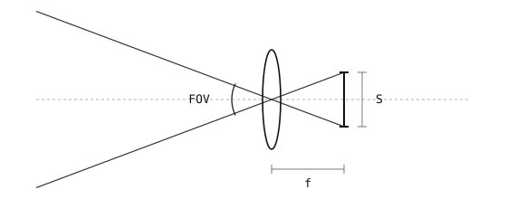

4.3. 视场角¶
摄像头能看到它前方世界中的一个锥形区域；该锥形之外的一切都会落到传感器边缘之外。这个锥形的角宽度就是 视场角（FOV），它由两个数值决定——传感器尺寸和镜头焦距。
4.3.1. FOV 公式¶

位于镜头后方距离 \(f\) 处、宽度为 \(S\) 的传感器定义出一个入射光线的锥形。该锥形的完整张角就是视场角。¶
一个宽度为 \(S\) 的传感器位于镜头后方距离 \(f\) 处，与光轴垂直。薄透镜模型指出，穿过镜头中心的光线不会偏折，因此从传感器的每个边缘各引一条这样的光线：每条都径直穿过镜头中心，并射向远端的场景。两条光线一起界定出传感器所能采集的光锥，而它们在镜头处的夹角就是视场角。
该锥形的一半是一个直角三角形。一条直角边是从镜头中心到传感器中心的光轴——长度为 \(f\)。另一条直角边是从传感器中心到一个边缘的半个传感器——长度为 \(S / 2\)。斜边就是光线本身，从镜头中心延伸到传感器边缘。
勾股定理把三条边长联系在一起，但勾股定理给不出角度，而镜头顶点处的角度正是我们要求的。三角学 是从边长比值通向角度的桥梁。在任何直角三角形中，一个角的 正切 定义为其对边除以邻边。对于半视场角，对边是半个传感器 \(S / 2\)，邻边是光轴那条直角边 \(f\)，所以
对等式两边应用正切的逆运算——反正切 函数——即可解出角度本身：
锥形关于光轴对称，所以完整 FOV 是半角的两倍：
从公式可以得出两个推论：
决定角度的是镜头焦距，而非绝对尺寸。 “广角”镜头之所以广，是因为它的焦距 短——\(f\) 越小，比值 \(S / 2f\) 就越大，锥形也就越宽。长焦距会收窄锥形（“长焦”镜头）。
传感器尺寸也很重要。 把同一个镜头装在更小的传感器前会裁切锥形——同一镜头在更小的传感器上的视场角比在更大的传感器上更窄。这就是为什么不同摄像头上的焦距数值不能直接比较；FOV 同时取决于 \(f\) 和 \(S\)。
4.3.2. 三种镜头选择¶
取一个 4.8 mm × 3.6 mm 的传感器（一种常见的小幅面尺寸，大致与 OpenMV Cam 传感器所提供的相当）以及三种镜头选择。
焦距 |
对角线 FOV |
水平 FOV |
垂直 FOV |
说明 |
|---|---|---|---|---|
2.8 mm |
~94° |
~81° |
~66° |
广角 |
4 mm |
~74° |
~62° |
~48° |
标准 |
8 mm |
~41° |
~33° |
~25° |
窄角 / 长焦 |
三列都套用同一个公式。对角线 FOV 取 \(S\) 等于传感器对角线 \(\sqrt{W^2 + H^2}\)（此传感器为 6 mm）；水平 FOV 取 \(S = W = 4.8\) mm；垂直 FOV 取 \(S = H = 3.6\) mm。焦距减半会使每个锥形几乎翻倍；焦距加倍则使其几乎减半。
镜头数据手册通常把 对角线 FOV 作为单一的标称数值公布，因为它从传感器一角跨到对角。而在规划画面能容纳什么时，水平和垂直 FOV 更为直接有用，因为画面是矩形的，矩形工作区域的边界沿水平和垂直方向，而不是沿对角线。
4.3.3. 选择焦距¶
应用所需的 FOV 由摄像头必须看到多大的区域以及摄像头与之的距离决定。如果摄像头位于一个 0.6 m × 0.6 m 工作区域上方 1 m 处，则覆盖一条边所需的角向 FOV 为 \(2 \cdot \arctan(0.3 / 1) \approx 33°\)，上面的 8 mm 镜头与之接近。
比应用所需更广会使物体在画面中变小，把像素浪费在背景上，并增大镜头畸变。比所需更窄则会把场景的部分内容丢到传感器边缘之外。合适的镜头是在摄像头的预定距离下仍能覆盖工作区域的最长焦距。